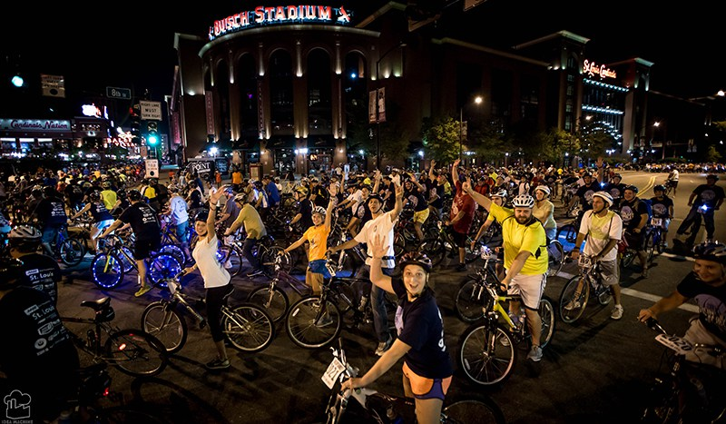
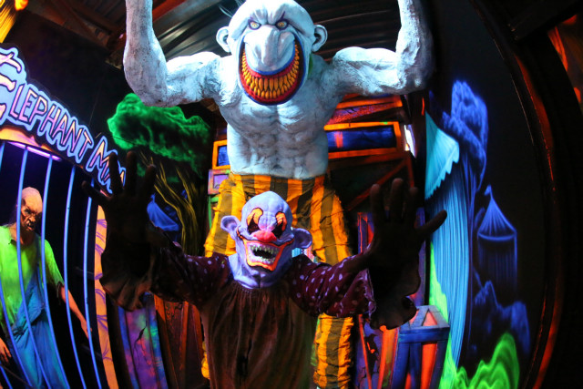
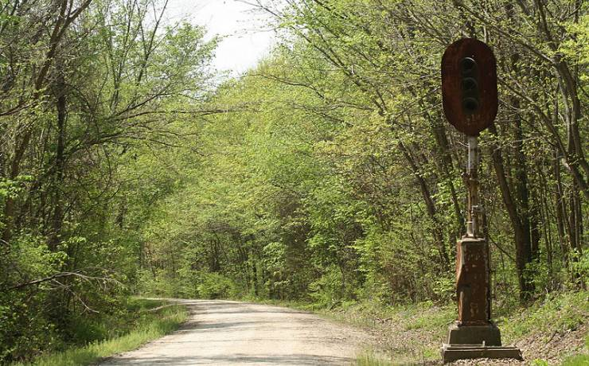
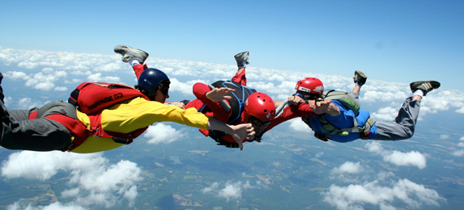

Moonlight Ramble in Saint Louis
Moonlight Ramble occurs every year in Saint Louis,MO. It is a casual ride through Saint Louis during the night. It is not a race so everyone is usually chill. The organizers of the event have the streets, that are in the route, blocked off from traffic. There are some regulations to be followed during the ride but those are for your safety. It is a lot of fun seeing Saint Louis in the middle of night without traffic.
image from: http://moonlightramble.com/project/moonlight-ramble-2015/
Haunted House Tour: All of October
I haven't been to a haunted house in years and I love to get freaked out. The last one I went to was in Fenton where I ran full charge into a wall(bloody nose, eye) and my friend lost control of her bladder. What a blast. This time I want to go all out and hit a variety of them throughout the month of October. I have heard there are escape rooms like in the movie SAW. This I must do!
Image from: http://www.scarefest.com/photogallery.cfm
Katy Trail: Missouri
Katy Trail is a Missouri State Park that follows the trail to Kansas. More specifically, the trail follows the old Missouri-Kansas-Texas railroad. I want to complete a solo bike ride, at least from Saint Charles to Sedalia. Many people go on organized tours but I would rather lone-wolf it and develop my own plan. There are plenty of sites to help you plan and set accommodations. First I need to set some targets for cycling(getting in better shape), gearing, and cash flow.
Image from: http://mostateparks.com
Image from: http://mostateparks.com
Skydive
Skydiving has been on a list for the last three years. I have to commit. I am setting a goal for Spring 2017.This would be a major achievement for me. Just thinking about it gets me amped.
Image from: http://www.skydivingspringfieldmo.com/images/573x260/springfield-skydiving-school.jpg
Complete LaunchCode
I am still on the same high I got when I found out I was accepted into the program this summer. What an experience! This is not just an educational program. LaunchCode has a holistic approach encompassing curriculum, instruction, materials, support, environment, resources and energy. LaunchCode is much more than I initially thought it was. This urges me to work harder and enjoy the process.
San Diego, CA
Taking a short trip to San Diego, CA is a must. I had residence there from 2006-2008. The environment is incredible from the people to the weather. San Diego is expensive so I worked and enjoyed the beaches. I saw a lot of the nightlife and attempted surfing(water is much like concrete) but San Diego and neighboring areas have so much more to offer.
Image from: http://www.plazaresearch.com/wp-content/gallery/other/sandiegoskyline_gde.jpg